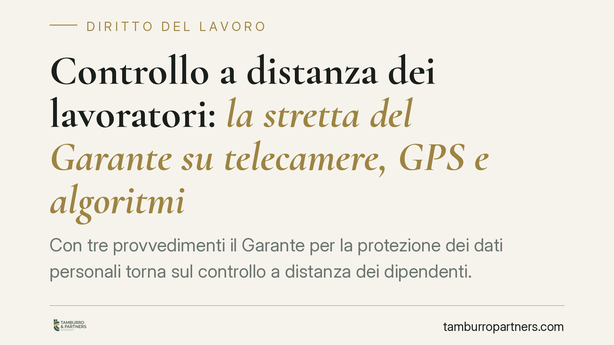

Controllo a distanza dei lavoratori: la stretta del Garante su telecamere, GPS e algoritmi
Con tre provvedimenti il Garante per la protezione dei dati personali torna sul controllo a distanza dei dipendenti. Telecamere, localizzatori GPS e algoritmi di monitoraggio finiscono sotto la lente: le aziende devono rispettare i limiti dell'art. 4 dello Statuto dei Lavoratori e i principi di proporzionalità e trasparenza. Un richiamo che impone verifiche immediate su strumenti già in uso.

Il contesto
Il Garante per la protezione dei dati personali è intervenuto con tre distinti provvedimenti su altrettante tecnologie di controllo: videosorveglianza, sistemi GPS installati su veicoli aziendali e algoritmi che analizzano la produttività dei dipendenti.
Il filo conduttore è chiaro. La digitalizzazione del lavoro moltiplica le occasioni di raccolta dati, ma non sospende le tutele. Il controllo a distanza resta un'eccezione delimitata, non la regola.
Inquadramento normativo
Il riferimento centrale è l'art. 4 della Legge 300/1970, lo Statuto dei Lavoratori. La norma vieta i controlli diretti e deliberati sull'attività dei lavoratori. Ammette però strumenti da cui possa derivare un controllo "indiretto", a tre condizioni: che servano a esigenze organizzative, produttive, di sicurezza del lavoro o di tutela del patrimonio aziendale; che sia stato stipulato un accordo con le rappresentanze sindacali o ottenuta l'autorizzazione dell'Ispettorato del lavoro; che il datore informi preventivamente i dipendenti sulle modalità d'uso e sui controlli.
A questo si somma la disciplina sulla protezione dei dati personali (Regolamento UE 2016/679, il GDPR, e il Codice privacy, D.Lgs. 196/2003). Ogni trattamento deve rispettare i principi di liceità, minimizzazione e proporzionalità: si raccolgono solo i dati strettamente necessari, per il tempo strettamente necessario. Per i sistemi più invasivi è richiesta una valutazione d'impatto sulla protezione dei dati (DPIA).
Il Garante ricorda inoltre che i dati raccolti per finalità legittime — ad esempio la sicurezza — non possono essere riutilizzati per valutare le prestazioni o adottare provvedimenti disciplinari se mancano i presupposti dell'art. 4.
Cosa cambia in concreto
Per le aziende il messaggio è diretto: non basta avere installato un sistema, occorre poter dimostrare la legittimità dell'intera catena.
Sulle telecamere, il Garante insiste sulla reale necessità dell'impianto, sulla delimitazione delle aree riprese e sui tempi di conservazione delle immagini, che devono essere contenuti. Riprese continuative e indiscriminate sulle postazioni di lavoro restano critiche.
Sul GPS, la localizzazione dei veicoli è ammessa per esigenze organizzative e di sicurezza, ma non può trasformarsi in un pedinamento costante del dipendente. Vanno previste modalità di disattivazione nelle pause e fuori dall'orario di lavoro.
Sugli algoritmi, il tema è più nuovo e più delicato. I sistemi che misurano ritmi, tempi e rendimento producono un monitoraggio pervasivo. Qui entrano in gioco anche le garanzie contro le decisioni interamente automatizzate: il lavoratore ha diritto a trasparenza sulla logica del sistema e a un intervento umano sulle valutazioni che lo riguardano.
Per i lavoratori cresce la consapevolezza di diritti già esistenti ma spesso poco esercitati: sapere quali dati vengono raccolti, perché, per quanto tempo, e poter contestare trattamenti sproporzionati.
Cosa fare in concreto
- Mappa gli strumenti da cui può derivare un controllo a distanza: telecamere, GPS, software gestionali, sistemi di logging e di misurazione della produttività.
- Verifica il titolo legittimante: per ciascuno strumento accertati di avere l'accordo sindacale o l'autorizzazione dell'Ispettorato del lavoro, oltre all'informativa consegnata ai dipendenti.
- Aggiorna le informative e la DPIA: descrivi finalità, dati trattati, tempi di conservazione e logica dei sistemi automatizzati, con linguaggio comprensibile.
- Riduci al minimo aree riprese, dati raccolti e tempi di conservazione; disattiva i tracciamenti fuori dall'orario di lavoro.
- Separa le finalità: non utilizzare dati raccolti per sicurezza o organizzazione come base per provvedimenti disciplinari in assenza dei presupposti di legge.
L'adeguamento non è solo un obbligo formale. Un trattamento viziato espone a sanzioni del Garante e rende inutilizzabili, sul piano probatorio, i dati raccolti in violazione dell'art. 4. Consigliamo di procedere a una ricognizione interna prima che il tema emerga in sede ispettiva o contenziosa.
---
*Contributo informativo a cura di Tamburro & Partners - Avv. Giuseppe Tamburro. Non costituisce parere legale.*
Ogni storia di lavoro ha i suoi tempi.
Se gestisci HR e vuoi un confronto su contenzioso, ispezioni o licenziamenti, scrivi allo studio. Ti rispondiamo entro un giorno lavorativo.